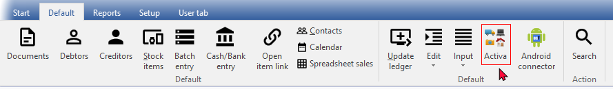
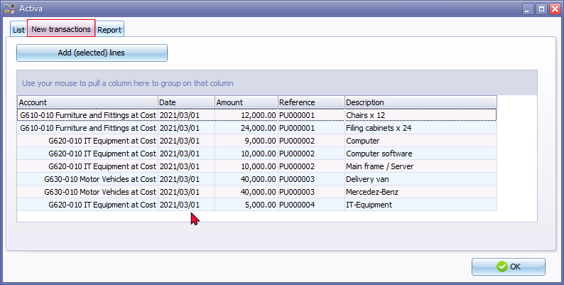
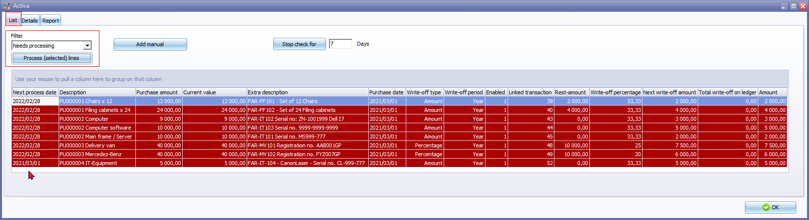
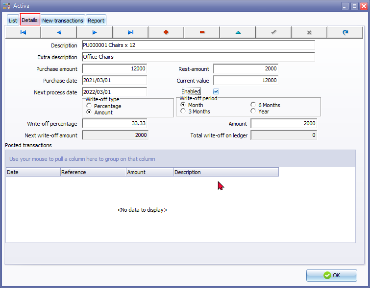
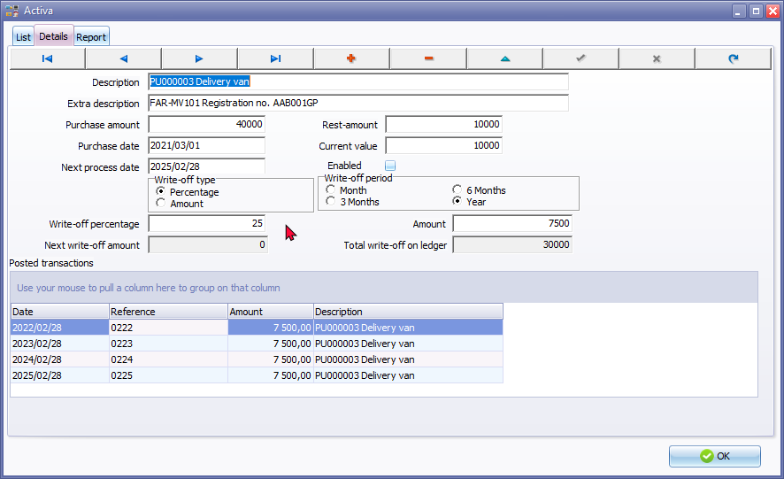

Process Fixed assets in the Activa plugin
Activa processing
Once the Activa plugin is activated, you may access the Activa plugin manually on the Default ribbon.

|
The Activa plugin will launch automatically when: New transactions tab - Purchase or any transaction is allocated and posted top the ledger to the Asset at cost account. Next process date - If an asset needs processing and the processing date is due to write off depreciation. |
Once the Activa plugin is activated, and you launch it for the first time, you need to add the new transactions.
The Activa - New transactions tab will list all existing transactions in posted batches and documents allocated to the accounts as selected on the Activa setup.

Select the transaction and click in the Add (selected) lines button. The transactions will be removed from the New transactions tab added to the List tab.
|
Multi-select records: Press the Ctrl key and click on the transactions. |
|
Context menu - Add consolidated: If you wish to consolidate (merge) more than one transaction to one (1) record, you may right-click and select the Add consolidated option. This will add the selected transactions as one (1) transaction on the Activa - List tab. This would normally be the case where a specific asset consists of more than one transaction (e.g. Purchase transaction of the asset and any other transactions, for example to install that asset and make it usable and operational). |
Once finished, adding the transactions, you need to select the items from the list and check and change the details as necessary on the Activa - Details tab.
|
If there are no new posted transactions in batches and or documents the New transactions tab will not be displayed. When any further transactions in batches and documents are posted (updated) to the ledger, it will automatically be added to the New transactions tab. When opening the Set of Books and any new transactions are added (posted or updated to the ledger), the Activa plugin New transactions tab will automatically be launched. |
Activa - List and Details
Once the Fixed assets is added from the the Activa - New transactions tab (Add (selected) lines button) add these new transactions is added to the Activa - List tab.
Add manual button - You may also Add manual transactions and set up and configure these transactions manually on the blank Activa - Details tab.
Stop check for 7 Days button - The default value is 7 days. The Fixed assets which need processing (on the "Next process date") will automatically launch after 7 days from that date. You may set the number of days according to your specific needs.
|
Before you start to process any Activa lines, you need to make absolutely sure that each of your Fixed assets is correctly set and configured. If any information is incorrect, or you need to change the information listed in the columns of the Activa - List tab, click on the Activa - Details tab of the selected Fixed asset. Once you click on the on the Process (selected) lines button, this will process the Activa write-off transactions and automatically post (update) these transactions to the ledger. |
Once new purchase transactions is allocated to the "Transactions" account (Asset at cost account) and the transactions is posted in batch transactions (e.g. Purchase journal) or Items selected in documents updated to the ledger, the transactions will be listed on the New transactions tab of the Activa plugin.
Once the selected lines is added to the List tab, you need to specify the necessary information and values of each asset.
|
Tax Legislation, Companies Act and accounting standards in some countries may prescribe different methods to write off depreciation (wear and tear allowances) over the life span for the types of fixed assets. When you add Fixed assets, you need to decide the method on which depreciation is calculated for the assets. These values only needs to be set once for a Fixed asset on the Details tab of the Activa plugin. The depreciation will be written-off each period over the life span of the fixed asset. Some of these methods is:
In addition to these methods, items (assets purchased for less than a prescribed amount) may be written-off in full. |
- Once you have activated the Activa plugin, you may click on the Activa icon on the Default ribbon. The Activa - List screen is displayed:

|
All transactions (including opening balances) will automatically be imported in this list. All unprocessed transactions will be indicated in red row. Once these have been processed, these will be indicated in a white background. |
|
Filter - Use the following Filter options to locate an asset record:
|
- The details for each of these asset transactions, will be displayed in the following columns:
- Next process date - By default this will be the system date. Later when processing the transactions, it will be the date as set in the write-off period.
- Description - The transaction reference and description as entered in batches which are updated (posted) to the ledger.
- Original amount - The original amount of the batch transaction. Note this should be exclusive of VAT/GST/Sales Tax).
- Current value - This is calculated as the current value minus any transactions processed in the Activa plugin.
- Extra description - You may enter extra text or descriptions as necessary.
|
For example, asset number on your asset register (Asset inventory), the method for calculation of Depreciation, reference to the Management's write-off authorisation (decision), reference to the section of the Tax Act of Tax Practice Note, etc. |
- Purchase date - The date of the purchase transaction is the document date or as entered in batches which are updated (posted) to the ledger.
- Write-off type - The values are as follows:
- 1 = Amount per Period
- 0 = Percentage per Period.
- Write-off period - The values are as follows:
- 1 = 1 Month
- 3 = Quarter (3 Months)
- 6 = Half year (6 Months)
- 12 = Year (12 Months)
- Enabled - The values are as follows:
- 1 = Enabled (active)
- 0 = Inactive (Enabled) not selected on the Activa - Details tab).
|
Once the final depreciation or write-off amount is reached, the following confirmation message will be displayed: "Write off for Asset description ended do you want to clear the activa accounts?" If select Yes to you clear the Activa account, the "End of life" entry will be displayed. |
- Linked transaction - The transaction number as automatically generated.
- Rest amount - This is the nominal value, scrap value, trade-in value, etc. of the assets at the end of its life span, that needs to be reflected in the balance sheet.
|
Tax Legislation and accounting standards in some countries may require a nominal value (e.g. 1.00) to be displayed. This simply means that the Asset is completely written-off, still on the business books or in use. Once that asset is disposed of, the nominal value will be written-off when determining the profit or loss with the sale of the fixed asset. |
- Write-off percentage – If the write-off type is set to Write-off percentage you may add the Write-off percentage (e.g. per month, quarter (3 months), 6 months (half-year) or year (12 months)).
- Write-off amount – If the write-off type is set to Write-off amount, you may enter the write-off amount (e.g. per month, quarter (3 months), 6 months (half-year) or year (12 months)).
- Next Write-off amount - This will automatically be calculated.
- Total Write-off on ledger – This amount will automatically be calculated. It accumulates the total of all transactions posted to the write-off account.
- Once you have located an entry on the Activa - List tab, click on the Details tab. The following screen is displayed:

|
You may use the record buttons to save and manage records. |
- Enter and/or select the following options:
- Description - This is the description of the transaction.
- Extra description - Add additional text for the depreciation transactions.
- Purchase amount - The purchase amount (cost amount), excluding Tax (VAT/GST/Sales tax) of the fixed asset will automatically be displayed. Check the Purchase amount. If you have entered any opening balances, please make sure that you enter the correct value of the asset here.
- Purchase date - The date of the purchase transaction is the document date or as entered in batches which are updated (posted) to the ledger The date of the purchase transaction is the document date or as entered in batches which are updated (posted) to the ledger
- Next process date - The date on which the next depreciation is scheduled for processing.
- Rest amount - The Rest amount, is by default 0. Enter the rest amount, scrap value (trade-in value) of the asset, if applicable.
- Current value - The current book value or holding value.
- Write-off type - Select Percentage or Amount.
- Percentage / Amount - Enter the percentage or the amount (depending on the selection in the "Write-off type" options).
- Write-off period - Select month, 3 months, 6 months or year.
- Next write-off amount - The next amount of depreciation that will be processed.
- Once finished, click on the OK button.
Process Activa records
|
Before you need to process depreciation (wear and tear allowances) make absolutely sure that the correct settings and details is listed for each asset class. You may need to consult the tax guidelines and practice notes issued by your tax authorities or other legislation applicable to your specific country. If this is not correct at this stage, select the asset and click on the Details tab to edit the necessary fields. |
To process transactions for depreciation (wear and tear allowances):
- On the Activa - List screen, use the Filter options to list the asset records the need processing.
- Select an asset record and make absolutely sure that the asset's details is correct.
|
Multi-select records: Press the Ctrl key and click on the transactions. |
- Click on the Process (selected) lines button. The Activa plugin will generate the necessary transactions in the selected batch (e.g. Activa journal) and update (post) these transactions to the ledger.
|
Once the final depreciation or write-off amount is reached, the following confirmation message will be displayed: "Write off for Asset description ended do you want to clear the activa accounts?" If select Yes to you clear the Activa account, the "End of life" entry will be displayed. |
|
If the "Next process date" is scheduled and the New Financial year is not opened for the scheduled process date, an error message will be displayed: "Process failed please check batch!" Click OK. When the Year-end process is finalised, you may proceed to process the selected Fixed assets. |
- Select the next Activa record, and repeat his process. Each of the processed lines for a selected asset in the Activa plugin will list the transactions in the "Posted transactions" section of the Activa - Details tab. This will keep track of all transactions and amounts written-off over the life span of the asset.

- Once this is done, click on the OK button to exit close the Activa plugin.